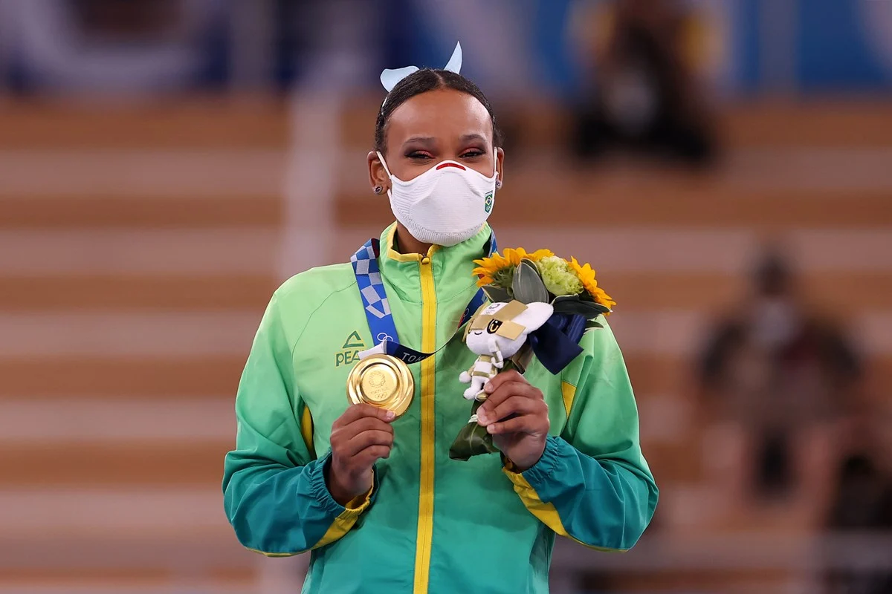

Rebeca fecha participação olímpica com dois pódios inéditos e um sentimento: "Só tenho gratidão"
Por Paulo Roberto Conde - GE - Tóquio
Japão
02/08/2021 07h53
O saldo foi mais do que positivo para quem se classificou pouco mais de um mês antes das Olimpíadas e sofreu com lesões durante todo o ciclo olímpico. Primeira campeã olímpica da ginástica feminina brasileira, Rebeca Andrade, de 22 anos, encerrou sua participação com o quinto lugar no solo com apenas um sentimento em mente: gratidão.
- Eu estou muito feliz, muito grata. Gostei de todas as minhas apresentações, desde o primeiro dia, e ter finalizado tão bem agora, com o solo, e ter levado mais alegria para o Brasil valeu a pena. Todas as pessoas que torceram por mim, que acreditaram no meu talento, que me conheceram agora também, fico feliz por inspirar tantos. Não sinto outra coisa que não seja gratidão – afirmou a paulista.
Ouro no salto e prata no individual geral, ela é até agora o grande nome do Brasil em Tóquio. Rebeca fez questão de enfatizar que a vitória não foi pessoal, mas de um conjunto de pessoas que acreditaram na recuperação dela.
- A mensagem que fica é acreditar em você, não desistir de maneira alguma do jeito fácil. Eu tive várias oportunidades de desistir, mas pessoas incríveis me ajudaram – comentou.
Na apresentação no solo, ela foi penalizada por pisar fora da área delimitada no tablado e terminou em quinto lugar, a pouco mais de um décimo da zona de medalhas.
- Eu não me senti pressionada para nada. Para levar uma medalha para o Brasil, para querer acertar. Foi uma coisa natural, que só fluía. Eu dei o meu melhor e isso é o que importa.